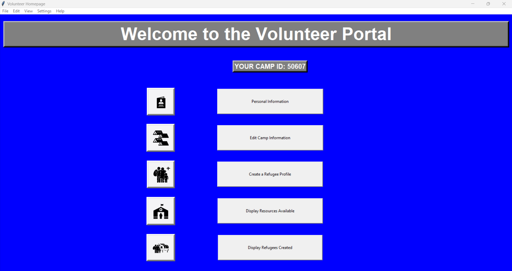

Humanitarian Management System
Python

Overview
Led a team of 7 to develop a comprehensive desktop application for managing refugee camps during humanitarian crises. The system provides tools for volunteer management, refugee tracking, and resource allocation.
Key Features
- Volunteer Management
- Account creation and management
- Role assignment and scheduling
- Activity tracking and reporting
- Refugee Management
- Registration and tracking
- Family unit management
- Medical and special needs tracking
- Camp Management
- Resource allocation
- Capacity planning
- Supply chain tracking
- Crisis Tracking
- Situation monitoring
- Resource forecasting
- Emergency response coordination
Technical Implementation
- Python-based desktop application
- SQLite database for data storage
- Custom UI framework for intuitive interaction
- Reporting and analytics capabilities
- Offline-first architecture for reliability
Role and Responsibilities
- Project lead and team coordinator
- System architecture design
- Core functionality implementation
- Quality assurance oversight
- Documentation management